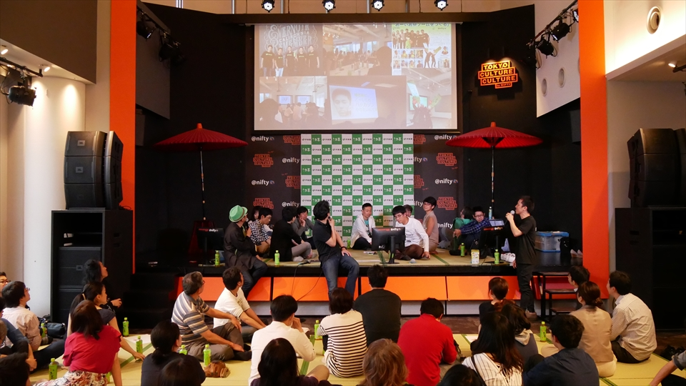

4年目を迎えてますます活性！茶ッカソンの今までとこれから
お茶と禅の思想を通し、共にアイデアを出しながら様々な気づきを得てほしい……。茶ッカソンが産声をあげた2014年5月から、早いもので丸3年が経ちました。
そして、4年目のスタートを記念し2017年5月13日(土)に東京都渋谷区の東京カルチャーカルチャーにて
「茶ッカソン」SOU・ANのつどい～3周年記念！茶ッカソン参加者大集合ミートアップ！
が開催されました。そこで語られたこれまでの茶ッカソンの歩みとこれからの展望。その様子をレポートします。
参加者が茶ッカソンを育ててくれた「これまで」
今回のメインコンテンツは、茶ッカソンの「これまで」と「これから」。参加者は延べ600名を超える過去の茶ッカソン参加者を中心に約60人が参加、もちろん今回が初参加の方も含めて、新旧参加者が入り混じり交流を深めるシーンが随所に見られました。
会場では、通常なら進行役や登壇者が立つステージ上にも畳が引かれ、参加者の居場所となったことはちょっと驚き。司会者をはじめ、マイクを持つ人がステージに腰かけるという斬新なスタイルも今回が初だったそう。
 茶ッカソンSOU・ANの集い～ステージ
圧倒的行動力でシリコンバレーを巻き込んだ初めての茶ッカソン(アメリカ開催)
4茶ッカソンSOU・ANの集い～アメリカ
2014年当時、シリコンバレーで「お～いお茶」の営業活動をしていた本イベントの発起人、伊藤園の角野賢一(当時サンフランシスコ営業担当)が、業務を通して知り合ったシリコンバレーの起業家たちに影響を受け、
「小さくてもいいから、世の中に良いインパクトを与えたい」
と思い立ち、ニフティの河原あずをはじめとする仲間たちと企画したのが茶ッカソンです。初めての茶ッカソンは、その後の重要なポイントともなる「巻き込み力」を発揮し、クラウドノートサービス「Evernote」の本社を会場とし、参加者には大手ショッピングモールサイトの役員や社会現象にもなった位置情報ゲーム「イングレス」「ポケモンGO」を生み出した企業のデザイナーなど、界隈の「すごい人たち」が集まるアイデアソンイベントとなりました。
参加者が茶ッカソンを発展させる
角野の帰国後、渋谷・横浜・牧之原(静岡)・京都・丹波の地で開催された茶ッカソンは、さらに参加者を巻き込み、どんどん進化していきます。
今回のイベントには、その立役者たちが一同に介しました。
日本での2回目の開催から、今ではすっかりおなじみになっている畳が導入されるようになりました。毎回この畳をセッティングしてくださるのが、北一商店の松永敬介さん。この人なしでは、茶ッカソンの今のスタイルは生まれませんでした。この北一商店の「さらり畳」には、1畳あたりお～いお茶500mlのペットボトル約600本分の茶殻が使われています。
茶ッカソンSOU・ANの集い～畳
また、茶ッカソンの参加者の中から、参加者同士で起業した人も現れました。
SNSに投稿した写真をプリントアウトできるサービス「SnSnap」を立ち上げた西垣雄太さんは、
「茶ッカソンに参加した時、今一緒に会社をやっているCTOの平沼真吾さんは別のチームだったのですが、打ち上げで意気投合してあっという間に起業が決まりました」
と運命の出会いを説明。まさに茶ッカソンで巻き込み巻き込まれて人生が変わったのです。
茶ッカソン開催中にテーマ曲が創られたということもありました。インプットゲストの一人で尺八奏者の工藤煉山さんがその時の会場の様子に感化され、作曲してくれました。
この日は、その曲を尺八で生演奏していただきました。
曲”A shower of cherry blossoms”は下記で聞くことができます。
工藤煉山HP
参加者がハッカソンを開催
徐々に若い人の参加も増える中、スタッフとして参加した聖光学院の生徒さんたちが、中高生のアイデアを社会に還元するため、学生主導イベント「わっかそん」を開催しました。
「『わっか』そん」は「若い」と「輪っか」の掛詞で、学生たちが輪になって社会人とともに課題解決に取り組むアイデアソンです。大学生になった立ち上げメンバーは、既に後輩に運営を引き継いでいます。
「僕が何年もかけてやってきたことをあっという間にやってしまいました。頭もいいし行動力もあり、僕は絶対に勝てません（笑）」と角野も脱帽です。
自治体を巻き込み、次のステージへ
茶ッカソンの巻き込み力は個人や企業にとどまらず自治体にまで及んでいます。2017年1月に行われた、外国人旅行者に向けて渋谷の街をご案内するマップをテーマにした茶ッカソンの優勝チームのアイデアは、実際に渋谷観光協会とともに、制作が進行しており、2017年6月に渋谷の街で夜間営業しているお店を特化してご案内する地図「渋谷ナイトマップ」がリリースされる予定になっています。
何度もゲストとして参加されている東京急行電鉄都市創造本部の貴島邦彦氏は
「渋谷の街のために企業・役所・個人が集まって何かを作るということはすばらしいと思う」と感想を述べました。
このように茶ッカソンは、様々な人とつながり、多くの人を巻き込むことでここまで成長してきたのでした。
4年目を迎え、茶ッカソンはさらにその先へ
そんな4年目を迎えた茶ッカソンについて、角野から2つの大きな発表がありました。
新しいロゴ・キャッチコピー
1つ目が、茶ッカソンの新しいロゴマークとキャッチコピーです。
一見シンプルに見えるロゴマークは和の心を感じさせる書道の「とめ」「はらい」といった筆使いで描かれ、全体が禅における書画のひとつ「円相」をイメージしてます。またマークの中央部分には茶葉の形が隠されています。
キャッチコピーは「茶ッカソンとは何か？」を改めて考えることからはじめ、できあがったのが
TEA BRINGS NEW ( )
五感をすませば、世界は変わる。
お茶と座禅をとおして心を無にし、新しいものを受けいれる余白(スペース)を作ることが、新しいアイデアにつながるということです。
またロゴマークとキャッチフレーズを体現するものとしてできあがったのが、茶ッカソンのWebサイトです。
「主客一体」に基づくコミュニティ
そしてもう一つの発表が「畳分け（URL:https://chackathon.com/tatamiwake）」です。
茶の湯の「主客一体」のに基づいたコミュニティの在り方を体現する一つの方法として考案された「畳分け」は、今や茶ッカソンのシンボルである畳を通し、みなさんと共に茶ッカソンを作り上げ、新しい「アイデア」を生み出すお手伝いをするというものです。
※主客一体とは
禅に由来する言葉で、客のおもてなしというのは招くあるじが一方的に行うものではない。招く側（ホスト）と招かれる客（ゲスト）が協力し、ともに一体となって作り上げるものであるという意味です。
※畳分け
茶ッカソンの理念、実施要領をよく理解していただいた上で、様々な団体（地方自治体、企業など）と一緒に茶ッカソンを開催させていただく形です。
これからの茶ッカソンが向かう先
茶ッカソンでは、出てくるアイデアはもちろん、参加者のみなさんが感じた「気づき」こそが何よりの成果だと考えています。これからも開催の度に、参加者の数だけ、いやもっと多くの「気づき」が生まれることでしょう。
茶ッカソンの精神は、今や個人、企業、自治体といったなつながりをこえて様々な関係を巻き込み、これからも多くの「気づき」を生み出していきます。
みなさまも是非、茶ッカソンの場に足をお運びください。